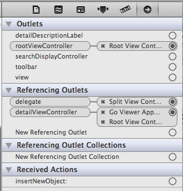
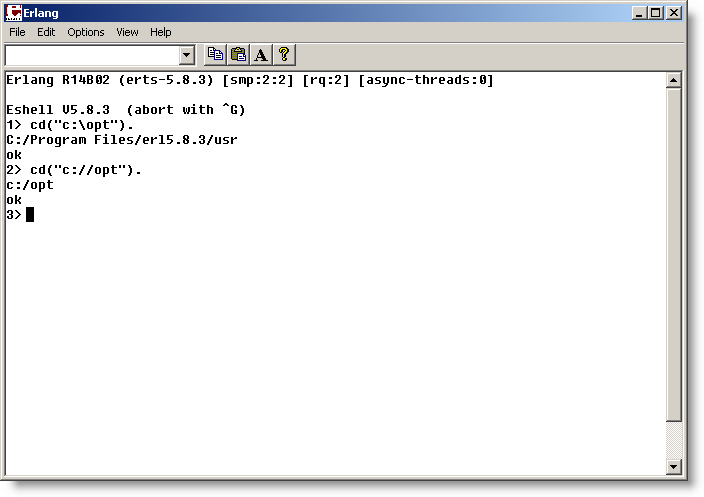

May 2011
31/05/2011 23:12:00
¶
●
C++: Dynamic Array
We can dynamically allocate arrays of primitive types using new as well
int numValues = 35;
int *valArray = new int[numValues];
With primitives, the values are uninitialized! We need to use a loop to initialize the values.
for (int i = 0; i < numValues; i++)
valArray[i] = 0;
Remember to free the array using the delete[] operator
#c++ #cs11
31/05/2011 23:05:00
¶
●
C++ Weirdness
This calls the copy constructor
Point p1(19.6, -3.5);
Point p2(p1); // Copy p1
Point p3 = p1 // syntax sugar for calling the copy-constructor
This calls the assignment operator
Point p1(19.6, -3.5);
Point p2;
p2 = p1; // Calls the default constructor on p2,
// then does assignment
#c++ #cs11
31/05/2011 22:47:00
¶
●
C++: Required Class Operations
Related to Item 11:
C++ requires that all classes must provide certain operations
If you don’t provide them, the compiler will make them up by following some simple rules. This can lead to problems
Required operations:
- At least one non-copy constructor
- A copy constructor
- An assignment operator
- A destructor
Quoted from cs11 lecture 2
#c++ #cs11
31/05/2011 22:27:00
¶
●
Item 11: Declare a copy constructor and an assignment operator for classes with dynamically allocated memory
An assignment operator is to address this kind of situation:
String a("Hello"); // define and construct a
{ // open new scope
String b("World"); // define and construct b
...
b = a; // execute default op=,
// lose b's memory
} // close scope, call b's
// destructor
String c = a; // c.data is undefined!
// a.data is already deleted
Copy constructor is to handle the pass-by-value situation in function invokation.
#c++ #Effective C++ #self-study
31/05/2011 17:50:00
¶
●
How to abort a maven build if checkstyle fails
It is not entirely obvious in checkstyle maven plugin documentation.
It is what I have done to the pom file:
...
<build>
<plugins>
<plugin>
<groupId>org.apache.maven.plugins</groupId>
<artifactId>maven-checkstyle-plugin</artifactId>
<version>2.6</version>
<executions>
<execution>
<id>Compulsory coding style check</id>
<phase>compile</phase>
<goals>
<goal>checkstyle</goal>
</goals>
</execution>
</executions>
<configuration>
<failsOnError>true</failsOnError>
<consoleOutput>true</consoleOutput>
</configuration>
</plugin>
</plugins>
</build>
...
The failsOnError will abort the build process if violation is detected.
#java #maven #checkstyle
31/05/2011 06:38:00
¶
●
Item 10: Write operator delete if you write operator new
Rather self-explanatory.
Two recommended checks:
Null Pointer Check
if (deadObject == 0) return;
Size Check
// pass on to default delete if the size does not match
if (size != sizeof(MyTestClass)) {
::operator delete(deadObject);
return;
}
#c++ #self-study #Effective C++
31/05/2011 06:36:00
¶
●
Item 9: Avoid hiding the "normal" form of new
Not good:
class X {
public:
void f();
// operator new allowing specification of a
// new-handling function
static void * operator new(size_t size, new_handler p);
};
Better:
class X {
public:
void f();
static void * operator new(size_t size, new_handler p);
static void * operator new(size_t size){
return ::operator new(size);
}
};
#c++ #Effective C++ #self-study
31/05/2011 06:33:00
¶
●
Item 8: Adhere to convention when writing operator new and operator delete
Since C++ guarantees it’s always safe to delete the null pointer, make sure the custom delete will honor that guarantee
General Idea:
void operator delete(void *rawMemory)
{
if (rawMemory == 0) return; // do nothing if the null
// pointer is being deleted
deallocate the memory pointed to by rawMemory;
return;
}
#c++ #Effective C++ #self-study
31/05/2011 06:26:21
¶
●
United States Minor Outlying Islands
#til #Today I Learn
31/05/2011 06:13:00
¶
●
Item 7 revisited
There is a discussion on SO about Item 7: Be prepared for out-of-memory conditions.
It is pointed out that the code example in item 7 is not thread safe.
An alternative:
void* X::operator new(std::size_t sz) {
void *p;
while ((p = ::operator new(sz, std::nothrow) == NULL) {
X::new_handler(); // install a specific new handler for X
}
return p;
}
In conclusion, great care must be taken when overriding new
#c++ #Effective C++
31/05/2011 06:00:38
¶
●
Item 7: Be prepared for out-of-memory conditions
When operator new cannot satisfy a request for memory, it calls the new-handler function not once, but repeatedly until it can find enough memory.
The handler can use do one of the following:
- Make more memory available
- Install a different new-handler
- Deinstall the new-handler - caused a std::bad_alloc to be thrown
- Throw an exception
- Not return - call abort or exit
An example:
void * X::operator new(size_t size)
{
new_handler globalHandler = // install X's
std::set_new_handler(currentHandler); // handler
void *memory;
try { // attempt
memory = ::operator new(size); // allocation
}
catch (std::bad_alloc&) { // restore
std::set_new_handler(globalHandler); // handler;
throw; // propagate
} // exception
std::set_new_handler(globalHandler); // restore
// handler
return memory;
}
31/05/2011 05:02:00
¶
●
A way to remove a certain layer form a UIView’s layers
NSIndexSet *indexSet = [mainLayer.sublayers indexesOfObjectsPassingTest:^(id obj, NSUInteger idx, BOOL *stop){
return [obj passMyTest]; // Put your test here
}];
NSArray *textLayers = [mainLayer.sublayers objectsAtIndexes:indexSet];
for (CATextLayer *textLayer in textLayers) {
[textLayer removeFromSuperlayer];
}
Keywords: indexesOfObjectsPassingTest, removeFromSuperlayer
#objective-c #ios
30/05/2011 22:33:00
¶
●
Item 6: Use delete on pointer members in destructors
Summary:
- deleting a null pointer is always safe
-
Do not delete a pointer that was passed into a class in the first place
#c++ #Effective C++
30/05/2011 22:21:00
¶
●
Item 5: Use the same form in corresponding uses of new and delete
string *stringPtr2 = new string[100];
...
delete [] stringPtr2; // delete an array of object
#c++ #Effective C++
30/05/2011 22:01:04
¶
●
Another oldie: “Put The Blame On Mame” by Rita Hayworth
#music
30/05/2011 21:51:02
¶
●
“Send Me to the Electric Chair” by Dinah Washington. Very interesting.
#music
30/05/2011 21:46:01
¶
●
Etta James
#music
30/05/2011 21:09:14
¶
●
Item 4: Prefer C++-style comments
#Effective C++ #c++
30/05/2011 21:05:56
¶
●
Item 3: Prefer new and delete to malloc and free
The problem with malloc and free: they don’t know about constructors and destructors
#Effective C++ #c++ #self-study
30/05/2011 20:20:00
¶
●
Item 2: Prefer to
Advantage of iostream: type safety
iostream vs iostream.h: isostream has its own namespace.
#self-study #Effective C++ #c++
30/05/2011 07:47:00
¶
●
Item 19: Differentiate among member functions, non-member functions, and friend functions
Summary:
Virtual functions must be members. If f needs to be virtual, make it a member function of C.
operator» and operator« are never members. If f is operator» or operator«, make f a non-member function. If, in addition, f needs access to non-public members of C, make f a friend of C.
Only non-member functions get type conversions on their left-most argument. If f needs type conversions on its left-most argument, make f a non-member function. If, in addition, f needs access to non-public members of C, make f a friend of C.
Everything else should be a member function. If none of the other cases apply, make f a member function of C.
#Effective C++ #c++ #self-study
30/05/2011 02:14:42
¶
●
Item 1: Prefer const and inline to #define
Classic example of why sometimes macro is a bad idea:
#define max(a,b) ((a) > (b) ? (a) : (b))
max(++a, b); // a is incremented twice
max(++a, b+10); // a is incremented once
#effective c++ #c++
30/05/2011 01:35:31
¶
●
The explicit keyword in C++ is used to declare explicit constructors. Explicit constructors are constructors that cannot take part in an implicit conversion
#c++
30/05/2011 01:05:06
¶
●
Item 38: Never redefine an inherited default parameter value
Virtual functions are dynamically bound, but default parameters are statically bound.
It means that you may end up invoking a virtual function defined in a derived class but using a default parameter value from a base class
#c++ #effective c++ #self-study
29/05/2011 21:48:26
¶
●
Alexander’s Star
#TIL #Today I Learn
29/05/2011 21:06:52
¶
●
Function arguments in C++ are passed by-value. A copy of each argument is made. A function works with the copy, not the original
#c++ #self-study
29/05/2011 07:39:00
¶
●
initialize is a class method which will be called before any other method is called on a class. Alternatively use a function with __attribute__ ((constructor))
#objective-c
29/05/2011 06:44:00
¶
●
To find out what iOS device is attached to the system, we can try monitor Monitoring Accessory-Related Events
#ios
29/05/2011 06:35:31
¶
●
Difference between setObject:forKey: and setValue:forKey: in NSMutableDictionary
From SO
setValue:forKey: is part of the NSKeyValueCoding protocol, which among other things, lets you access object properties from the likes of Interface Builder. setValue:forKey: is implemented in classes other than NSDictionary.
setObject:forKey: is NSMutableDictionary’s reason to exist. Its signature happens to be quite similar to setValue:forKey:, but is more generic (e.g. any key type). It’s somewhat of a coincidence that the signatures are so similar.
What adds to the confusion is that NSMutableDictionary’s implementation of setValue:forKey: is equivalent to setObject:forKey: in most cases. In other classes, setValue:forKey: changes member variables. In NSMutableDictionary, it changes dictionary entries, unless you prefix the key with a ‘@’ character — in which case it modifies member variables.
So in a nutshell, use setObject:forKey: when you need to work with dictionary keys and valus, and setValue:forKey: in the rarer cases where you need to tackle KVP.
#objective-c #stackoverflow
28/05/2011 01:21:58
¶
●
Boby guard technique
1) Side-by-side/hand holding/hand on shoulder
2) From behind (palm strike or knee back attack + head turn)
3) From side
#krav maga
27/05/2011 12:52:00
¶
●
Stupid mistake
My app crashed for no reason.
Turns out I did it
[self.view.addSublayer:myLayer];
[myLayer dealloc];
when I mean to do it
[self.view.addSublayer:myLayer];
[myLayer release];
#objective-c
26/05/2011 08:03:10
¶
●
Counting unique items in an array
From SO
NSCountedSet *cs = [NSCountedSet new];
for(id anObj in someArray)
[cs addObject: anObj];
// then, you can access counts like this:
.... count = [cs countForObject: anObj]; ...
[cs release];
#objective-c
26/05/2011 07:57:48
¶
●
When I use google doc in chrome, I can directly print the document to the printer by just pressing the printer icon.
It was less straight-forward in the past. It usually involved downloading a pdf rendering of the file, then print it to a printer via the pdf reader.
Nice.
25/05/2011 09:41:00
¶
●
Liskov substitution principle
Liskov Principle: no subclass should take away something that’s in the superclass
#computer science
25/05/2011 07:42:00
¶
●
It is like you want to be a nun because you saw a flying nun.
Edward Conlon, author of Blue Blood, on people wanting to join CSI after watching the TV show
#fun
24/05/2011 20:12:00
¶
●
Earn another experience point
Wrote up a simple test module code (simply called ‘test’), inside which I defined a function mp. It does some loan calculation given a loan amount, interest rate (r) and repayment periods (n).
When I compile the module, I get this error message:
Warning: this expression will fail with a 'badarith' exception
Not really understand what is wrong, I proceed to run the code like so: test:mp(100000, 0.075/12.0, 30*12).
Now I get another error message:
exception error: no function clause matching test:mp(100000, 0.00625, 360)
Turns out the function declaration is mp(B, r, n) .
See the problem there? r and n are atoms! I forgot to use uppercase to denote they are actually input variables.
#erlang
24/05/2011 19:00:05
¶
●
For some reason my Chrome installation is gone from my window XP at work. I have to re-install and redo some setup again
There are two must-install chrome extensions:
24/05/2011 07:48:26
¶
●

Simple grid like arrangement on iOS
#ios
23/05/2011 21:55:25
¶
●
A friend helps you move.
A good friend helps you move a body
Rich Hall
#fun
23/05/2011 16:43:00
¶
●
RSS Feed Parsing Tasks (I)
Goal: return true if the root element looks something like <rss version=”2.0”>
(Actually do not know why the use of ‘2.0’ and “2.0” in the comparison below can cause a difference in outcome)
-module(rss_parse).
-export([test/0]).
-export([is_rss2_feed/1]).
-include_lib("xmerl/include/xmerl.hrl").
test()->
is_rss2_feed('digg-science-rss1.xml').
is_rss2_feed(Filename) ->
{ParseResult, _} = xmerl_scan:file(Filename),
Attrs = ParseResult#xmlElement.attributes,
is_rss2_feed_test(Attrs).
is_rss2_feed_test([]) ->
false;
is_rss2_feed_test([#xmlAttribute{name=version,value="2.0"}|_T]) ->
true;
is_rss2_feed_test([_|T]) ->
is_rss2_feed_test(T).
#erlang
23/05/2011 05:46:28
¶
●
CGAffineTransformMakeRotation vs CGAffineTransformRotate
22/05/2011 16:41:00
¶
●
Note to self: net_adm can be used to discover the erlang cluster topology.
10> net_adm:world().
** exception exit: {error,enoent}
in function net_adm:world/1
enoent is most likely a result of missing file
#erlang
22/05/2011 16:38:12
¶
●
Note to self: auth module can help us to find out the cookie of nodes.
7> auth:cookie().
nocookie
#erlang
22/05/2011 16:31:00
¶
●
Note to self: cannot add ivar to a category @interface
#objective-c
22/05/2011 15:37:00
¶
●
To detect iPhone 4/Retina Display
A few posts about this topic:
if ([[UIScreen mainScreen] respondsToSelector:@selector(displayLinkWithTarget:selector:)] &&
([UIScreen mainScreen].scale == 2.0)) {
// Retina display
} else {
// non-Retina display
}
#ios
22/05/2011 12:55:00
¶
●

To add framework to a project in XCode 4
#xcode4
21/05/2011 15:47:00
¶
●
Sieve of Eratosthenes, Process-Style
Obviously I am less familiar with the syntax than I was a year ago.
Experience Point: Whenever there seems to be a need to use if inside the code, it is better to check if we can use guard instead.
-module(proc_sieve).
-export([generate/1]).
-define(TRACE(X), io:format("{~p,~p}: ~p~n", [?MODULE,?LINE,X])).
-define(TIMEOUT, 1000000).
sieve2(0, InvalidPid) ->
receive
P -> sieve2(P, InvalidPid)
after ?TIMEOUT ->
?TRACE("time out in P=0~n")
end;
%% starting condition
sieve2(P, NextPid) when is_pid(NextPid) ->
receive
{done, From} ->
NextPid ! {done, self()},
receive
LstOfRes ->
From ! [P] ++ LstOfRes
end;
N when N rem P == 0 ->
sieve2(P, NextPid); %% this semicolon is needed
N when N rem P /= 0 ->
NextPid ! N,
sieve2(P, NextPid) %% put semicolon here causes syntax error
after ?TIMEOUT ->
?TRACE(io:format("time out in is_pid clause P=~p~n", [P]))
end;
sieve2(P, Invalid) ->
receive
{done, From} ->
%% no downstream process, just send the result back
From ! [P];
N when N rem P == 0 ->
sieve2(P, Invalid); %% this semicolon is needed
N when N rem P /= 0 ->
?TRACE(io:format("Starting ~p for ~p~n", [self(), N])),
Pid = spawn(proc_sieve, sieve2, [0, void]),
Pid ! N,
sieve2(P, Pid) %% put semicolon here causes syntax error
after ?TIMEOUT ->
?TRACE(io:format("time out in no pid clause P=~p~n", [P]))
end.
sieve() ->
spawn(proc_sieve, sieve2, [0, void]).
generate(MaxN) ->
Pid = sieve(),
generate2(Pid, 2, MaxN).
generate2(Pid, End, End) ->
Pid ! {done, self()},
receive
Res -> Res
end;
generate2(Pid, N, End) ->
Pid ! N,
generate2(Pid, N + 1, End).
#erlang
21/05/2011 08:45:00
¶
●
Generate a list of number
Python
>>> range(1, 11)
[1, 2, 3, 4, 5, 6, 7, 8, 9, 10]
Erlang
1> lists:seq(1,10).
[1,2,3,4,5,6,7,8,9,10]
And the Java way
import java.util.ArrayList;
import java.util.List;
import org.junit.Test;
public class TestGen {
@Test
public void testGen() {
List l = new ArrayList();
for (int i = 0; i <= 10; i++) {
l.add(new Integer(i));
}
System.out.print(l);
}
}
#erlang #python #java
21/05/2011 07:50:58
¶
●
kick advance (back foot in, front foot kick)
kick retreat (front foot back, back foot kick)
wrist control (both thumb on/below knuckle, elbow up)
wrist/knife control
knife upfront, knife (long range), knife (close range)
#krav maga
20/05/2011 19:30:06
¶
●
Erlang built-in functions for working with tuples
size(Tuple)
element(Pos, Tuple)
setelement(Pos, Tuple, Val)
#erlang
20/05/2011 19:00:06
¶
●
$ in erlang
$ followed by a character evaluates to the character’s value
3> $$.
36
4> $..
46
#erlang
20/05/2011 16:25:00
¶
●
Some erlang predefined macros
- ?MODULE – name of current module, as an atom
- ?MODULE_STRING – name of current module, as a string
- ?FILE – filename of the current module
- ?LINE – current line-number
#erlang
20/05/2011 16:16:00
¶
●
Erlang shell command rr
- “Read records”
- Takes a module name (atom) or a file name (string)
#erlang
20/05/2011 01:26:24
¶
●

Root View Controller’s connections
19/05/2011 23:30:00
¶
●

Detail View Controller’s connection
19/05/2011 04:40:34
¶
●
Mobius (III)
My first part of erlang self-study has come to an end.
Somehow I cannot get mobius:find_square_multiples(3, 20) to work as required here.
-module(mobius).
-export([is_prime/1]).
-export([prime_factors/1]).
-export([is_square_multiple/1]).
-export([find_square_multiples/2]).
is_prime(N) ->
is_prime_test(N, trunc(math:sqrt(N))).
is_prime_test(1, _) -> true;
is_prime_test(2, _) -> true;
is_prime_test(_, 1) -> true; %% termination condition
is_prime_test(Testee, N) when Testee rem N =:= 0
-> false;
is_prime_test(Testee, N) when Testee rem N =/= 0
-> is_prime_test(Testee, N-1).
prime_factors(N) ->
prime_factors2(N, [], 2).
prime_factors2(1, [], _) -> [1];
prime_factors2(N, Result, N) -> Result ++ [N];
prime_factors2(N, Result, M) when N rem M =/= 0
-> prime_factors2(N, Result, M+1);
prime_factors2(N, Result, M) when N rem M =:= 0
-> prime_factors2(N div M, Result ++ [M] , 2).
is_square_multiple(N) ->
Res = fmf([], prime_factors(N)),
Res2 = lists:filter(fun({_, F}) -> F > 1 end, Res),
length(Res2) >= 1.
fmf(Res, [H|T]) ->
FullLen = length([H|T]),
Tmp = lists:filter(fun(X) -> X =/= H end, T),
fmf([{H, FullLen - length(Tmp)}] ++ Res, Tmp);
fmf(Res, []) ->
Res.
%% By definition the Count must be bigger than 1
is_square_multiple2(N, Count) when Count > 1 ->
Res = fmf([], prime_factors(N)),
Res2 = lists:filter(fun({_, F}) -> F >= Count end, Res),
length(Res2) >= 1.
find_square_multiples(Count, MaxN) ->
fsm(Count, MaxN, is_square_multiple2(MaxN, Count)).
fsm(_Count, Counter, true) ->
Counter;
fsm(_, 2, _) ->
fail; %% search failed
fsm(Count, Counter, false) ->
fsm(Count, Counter-1, is_square_multiple2(Counter-1, Count)).
#erlang
18/05/2011 14:07:15
¶
●
Loving JQuery.
I want to use javascript to toggle the highlight of some anchor tags. This is the first cut:
function handle_txn_group_links(txn_group) {
$('.txn_group_link').each(function() {
$(this).removeClass('selected-item');
});
$('.txn_group_link')
.filter('[txn_group="' + txn_group + '"]')
.addClass('selected-item');
};
Basically it steps thru all links of the same class, turn off the highlight, then set the candidate link to highlight css class.
Then I realised there is a smarter way to do it through the use of siblings():
function handle_txn_group_links(txn_group) {
$('.txn_group_link')
.filter('[txn_group="' + txn_group + '"]')
.addClass('selected-item').siblings().removeClass('selected-item');
};
#jquery
17/05/2011 21:39:00
¶
●
To convert an NSString into an NSNumber
NSNumberFormatter * f = [[NSNumberFormatter alloc] init];
[f setNumberStyle:NSNumberFormatterDecimalStyle];
NSNumber * myNumber = [f numberFromString:@"42"];
[f release];
#ios
17/05/2011 01:45:13
¶
●
Trying to add SplitViewController to self.window as a RootViewController. Still not working.
Need to work on the XIB magic
17/05/2011 01:26:59
¶
●
Getting to understand more about the role of rootViewController
17/05/2011 00:30:59
¶
●
If external screen is attached to an ios device
This will return True:
[[UIScreen screens] count] > 1
15/05/2011 20:17:00
¶
●
Here is a code fragment from XCode 4 generated iOS app template:
@interface viewexampleAppDelegate : NSObject < UIApplicationDelegate > {
}
@property (nonatomic, retain) IBOutlet UIWindow *window;
@property (nonatomic, retain) IBOutlet viewexampleViewController *viewController;
@end
In the .m file,
@synthesize window=_window;
@synthesize viewController=_viewController;
_window is not declared anywhere. A backing instance variable by this name will be generated automatically
#ios
14/05/2011 21:08:00
¶
●
To exit an app when applicationDidEnterBackground:(UIApplication *)application is called, try set UIApplicationExitsOnSuspend to YES in project plist file.
#ios
14/05/2011 17:54:00
¶
●
Removing *.xcodeproj/project.xcworkspace/ can reset the window/workspace settings in xcode 4
#xcode4
13/05/2011 23:38:00
¶
●
Taken from Lecture 2:
math module contains a sqrt function, but
can’t pass it as an argument.
Module functions aren’t higher-order function.
Instead, we can wrap it with a fun
1> lists:map(fun math:sqrt/1, [9, 16, 25]).
[3.00000,4.00000,5.00000
#erlang
13/05/2011 23:34:00
¶
●
Did not know I can declare an anonymous function with multiple clauses as such:
Abs = fun
(X) when X >= 0 -> X;
(X) -> -X
end.
#erlang
13/05/2011 15:01:46
¶
●
Mobius (II)
Find all prime factors
-module(mobius).
-export([is_prime/1]).
-export([prime_factors/1]).
is_prime(N) ->
is_prime_test(N, trunc(math:sqrt(N))).
is_prime_test(1, _) -> true;
is_prime_test(2, _) -> true;
is_prime_test(_, 1) -> true; %% termination condition
is_prime_test(Testee, N) when Testee rem N =:= 0
-> false;
is_prime_test(Testee, N) when Testee rem N =/= 0
-> is_prime_test(Testee, N-1).
prime_factors(N) ->
factor2(N, [], 2).
factor2(1, [], _) -> [1];
factor2(N, Result, N) -> Result ++ [N];
factor2(N, Result, M) when N rem M =/= 0
-> factor2(N, Result, M+1);
factor2(N, Result, M) when N rem M =:= 0
-> factor2(N div M, Result ++ [M] , 2).
#erlang
13/05/2011 13:45:00
¶
●
Mobius
A simple prime number test rountine
-module(mobius).
-export([is_prime/1]).
-export([is_prime_test/2]).
is_prime(N) ->
is_prime_test(N, trunc(math:sqrt(N))).
is_prime_test(1, _) -> true;
is_prime_test(2, _) -> true;
is_prime_test(_, 1) -> true; %% termination condition
is_prime_test(Testee, N) when Testee rem N =:= 0
-> false;
is_prime_test(Testee, N) when Testee rem N =/= 0
-> is_prime_test(Testee, N-1).
#erlang
12/05/2011 21:27:00
¶
●

To cd() in erlang on MS window, one must escape the path separator properly.
#erlang
12/05/2011 16:59:00
¶
●
Warm Up (III)
Use of tail-recursion
-module(fib).
-export([fib_p/1, fib_g/1, tail_fib/1]).
-export([test/0, test_t/0]).
%% fib_p: non-tail recursion version
fib_p(0) -> 0;
fib_p(1) -> 1;
fib_p(N) -> fib_p(N-1) + fib_p(N-2).
%% guard
fib_g(N) when N == 0 -> 0 ;
fib_g(N) when N == 1 -> 1;
fib_g(N) -> fib_g(N-1) + fib_g(N-2).
%% tail version
tail_fib(N)
-> fib_t(N, 0, []).
fib_t(1, _, _) -> 1; %% special condition 1
fib_t(2, _, _) -> 1; %% special condition 2
fib_t(EndCond, 0, [])
-> fib_t(EndCond, 1, [1]); %% initial condition 1
fib_t(EndCond, 1, [1])
-> fib_t(EndCond, 2, [1, 1]); %% initial condition 2
fib_t(EndCond, Counter, [X,Y|Tail]) when EndCond =/= Counter
-> fib_t(EndCond, Counter+1, [X+Y, X, Y|Tail]);
fib_t(N, N, [Head| _])
-> Head. %% end condition
%% test
test() ->
io:format("fib_p ~p~n", [fib_p(10)]),
io:format("fib_g ~p~n", [fib_g(10)]),
io:format("tail_fib ~p~n", [tail_fib(10)]).
test_t() ->
timer:tc(fib, fib_g, [10]).
#erlang
12/05/2011 13:45:44
¶
●
Warm Up (II)
Using guard:
-module(fib).
-export([fib_p/1, fib_g/1]).
-export([test/0, test_t/0]).
%% fib_p: non-tail recursion version
fib_p(0) -> 0;
fib_p(1) -> 1;
fib_p(N) -> fib_p(N-1) + fib_p(N-2).
%% guard
fib_g(N) when N == 0 -> 0 ;
fib_g(N) when N == 1 -> 1;
fib_g(N) -> fib_g(N-1) + fib_g(N-2).
%% test
test() ->
fib_p(10),
fib_g(10).
test_t() ->
timer:tc(fib, fib_g, [10]).
#erlang
12/05/2011 12:20:22
¶
●
Warm Up
Fibonacci function, according to wikipedia
-module(fib).
-export([fib/1]).
fib(0) -> 0;
fib(1) -> 1;
fib(N) -> fib(N-1) + fib(N-2).
#erlang
11/05/2011 22:07:35
¶
●
Happy to have enabled syntax highlight in this blog
11/05/2011 09:50:09
¶
●
Hammer
Side hammer, back hammer
left strike, step forward, hammer, fighting stance, move around
#krav maga
04/05/2011 14:20:00
¶
●
Reversing a list with slice in python
foo = ['red', 'white', 'blue', 1, 2, 3]
foo[-1::-1]
#python
03/05/2011 19:50:00
¶
●
Hook and uppercut
Turn the body
Don’t send signal with the arms
Hold fist properly
#krav maga
03/05/2011 07:12:49
¶
●
GLSL
#objective-c
03/05/2011 06:56:00
¶
●
New OpenGL API
glPointSize(15); // 15 desired size
equivalent to
float params[] = { 1, 0, 0 };
glPointParameterfv(GL_POINT_DISTANCE_ATTENUATION, params);
The underlying calculation:
actualSize = desiredSize / sqrt(p[0] + p[1] * d + p[2] * d * d)
#objective-c
03/05/2011 06:11:42
¶
●
NSManagedObject::willTurnIntoFault
#objective-c
02/05/2011 00:48:00
¶
●
Reading about GameKit and Session
#objective-c
01/05/2011 21:20:55
¶
●
VBO: OpenGL Vertex Buffer Object
01/05/2011 21:12:00
¶
●
Just learn something new to me: UISegmentedControl :
A UISegmentedControl object is a horizontal control made of multiple segments, each segment functioning as a discrete butto
#objective-c
01/05/2011 20:21:45
¶
●
Reading about Mixing OpenGL ES and UIKit
#objective-c
01/05/2011 19:04:00
¶
●
C refresher (3)
From arc4rand man page:
The random() function will by default produce a sequence of numbers that
can be duplicated by calling srandom() with '1' as the seed. The
srandom() function may be called with any arbitrary seed value to get
slightly more unpredictable numbers. It is important to remember that
the random() function is entirely predictable, and is therefore not of
use where knowledge of the sequence of numbers may be of benefit to an
attacker.
The arc4rand() function will return very good quality random numbers,
slightly better suited for security-related purposes. The random numbers
from arc4rand() are seeded from the entropy device if it is available.
Index